pacman::p_load(sf, tmap, tidyverse)Hands on Exercise 1: Data importing and wrangling
Overview
In this hands-on exercise, you will learn how to handle geospatial data in R by using sf package.
By the end of this hands-on exercise, you should acquire the following competencies:
installing and loading sf and tidyverse packages into R environment,
importing geospatial data by using appropriate functions of sf package,
importing aspatial data by using appropriate function of readr package,
exploring the content of simple feature data frame by using appropriate Base R and sf functions,
assigning or transforming coordinate systems by using using appropriate sf functions,
converting an aspatial data into a sf data frame by using appropriate function of sf package,
performing geoprocessing tasks by using appropriate functions of sf package,
performing data wrangling tasks by using appropriate functions of dplyr package and
performing Exploratory Data Analysis (EDA) by using appropriate functions from ggplot2 package.
Getting Started
Importing Geospatial Data
mpsz = st_read(dsn = "Data/geospatial",
layer = "MP14_SUBZONE_WEB_PL")Reading layer `MP14_SUBZONE_WEB_PL' from data source
`D:\KathyChiu77\ISSS624\Hands-on Ex\Hands-on Ex 1\Data\geospatial'
using driver `ESRI Shapefile'
Simple feature collection with 323 features and 15 fields
Geometry type: MULTIPOLYGON
Dimension: XY
Bounding box: xmin: 2667.538 ymin: 15748.72 xmax: 56396.44 ymax: 50256.33
Projected CRS: SVY21cyclingpath = st_read(dsn = "Data/geospatial",
layer = "CyclingPathGazette")Reading layer `CyclingPathGazette' from data source
`D:\KathyChiu77\ISSS624\Hands-on Ex\Hands-on Ex 1\Data\geospatial'
using driver `ESRI Shapefile'
Simple feature collection with 2558 features and 2 fields
Geometry type: MULTILINESTRING
Dimension: XY
Bounding box: xmin: 11854.32 ymin: 28347.98 xmax: 42626.09 ymax: 48948.15
Projected CRS: SVY21preschool = st_read("Data/geospatial/PreSchoolsLocation.kml")Reading layer `PRESCHOOLS_LOCATION' from data source
`D:\KathyChiu77\ISSS624\Hands-on Ex\Hands-on Ex 1\Data\geospatial\PreSchoolsLocation.kml'
using driver `KML'
Simple feature collection with 2290 features and 2 fields
Geometry type: POINT
Dimension: XYZ
Bounding box: xmin: 103.6878 ymin: 1.247759 xmax: 103.9897 ymax: 1.462134
z_range: zmin: 0 zmax: 0
Geodetic CRS: WGS 84Checking the Content of A Simple Feature Data Frame
st_geometry(mpsz)Geometry set for 323 features
Geometry type: MULTIPOLYGON
Dimension: XY
Bounding box: xmin: 2667.538 ymin: 15748.72 xmax: 56396.44 ymax: 50256.33
Projected CRS: SVY21
First 5 geometries:glimpse(mpsz)Rows: 323
Columns: 16
$ OBJECTID <int> 1, 2, 3, 4, 5, 6, 7, 8, 9, 10, 11, 12, 13, 14, 15, 16, 17, …
$ SUBZONE_NO <int> 1, 1, 3, 8, 3, 7, 9, 2, 13, 7, 12, 6, 1, 5, 1, 1, 3, 2, 2, …
$ SUBZONE_N <chr> "MARINA SOUTH", "PEARL'S HILL", "BOAT QUAY", "HENDERSON HIL…
$ SUBZONE_C <chr> "MSSZ01", "OTSZ01", "SRSZ03", "BMSZ08", "BMSZ03", "BMSZ07",…
$ CA_IND <chr> "Y", "Y", "Y", "N", "N", "N", "N", "Y", "N", "N", "N", "N",…
$ PLN_AREA_N <chr> "MARINA SOUTH", "OUTRAM", "SINGAPORE RIVER", "BUKIT MERAH",…
$ PLN_AREA_C <chr> "MS", "OT", "SR", "BM", "BM", "BM", "BM", "SR", "QT", "QT",…
$ REGION_N <chr> "CENTRAL REGION", "CENTRAL REGION", "CENTRAL REGION", "CENT…
$ REGION_C <chr> "CR", "CR", "CR", "CR", "CR", "CR", "CR", "CR", "CR", "CR",…
$ INC_CRC <chr> "5ED7EB253F99252E", "8C7149B9EB32EEFC", "C35FEFF02B13E0E5",…
$ FMEL_UPD_D <date> 2014-12-05, 2014-12-05, 2014-12-05, 2014-12-05, 2014-12-05…
$ X_ADDR <dbl> 31595.84, 28679.06, 29654.96, 26782.83, 26201.96, 25358.82,…
$ Y_ADDR <dbl> 29220.19, 29782.05, 29974.66, 29933.77, 30005.70, 29991.38,…
$ SHAPE_Leng <dbl> 5267.381, 3506.107, 1740.926, 3313.625, 2825.594, 4428.913,…
$ SHAPE_Area <dbl> 1630379.27, 559816.25, 160807.50, 595428.89, 387429.44, 103…
$ geometry <MULTIPOLYGON [m]> MULTIPOLYGON (((31495.56 30..., MULTIPOLYGON (…head(mpsz, n=5) Simple feature collection with 5 features and 15 fields
Geometry type: MULTIPOLYGON
Dimension: XY
Bounding box: xmin: 25867.68 ymin: 28369.47 xmax: 32362.39 ymax: 30435.54
Projected CRS: SVY21
OBJECTID SUBZONE_NO SUBZONE_N SUBZONE_C CA_IND PLN_AREA_N
1 1 1 MARINA SOUTH MSSZ01 Y MARINA SOUTH
2 2 1 PEARL'S HILL OTSZ01 Y OUTRAM
3 3 3 BOAT QUAY SRSZ03 Y SINGAPORE RIVER
4 4 8 HENDERSON HILL BMSZ08 N BUKIT MERAH
5 5 3 REDHILL BMSZ03 N BUKIT MERAH
PLN_AREA_C REGION_N REGION_C INC_CRC FMEL_UPD_D X_ADDR
1 MS CENTRAL REGION CR 5ED7EB253F99252E 2014-12-05 31595.84
2 OT CENTRAL REGION CR 8C7149B9EB32EEFC 2014-12-05 28679.06
3 SR CENTRAL REGION CR C35FEFF02B13E0E5 2014-12-05 29654.96
4 BM CENTRAL REGION CR 3775D82C5DDBEFBD 2014-12-05 26782.83
5 BM CENTRAL REGION CR 85D9ABEF0A40678F 2014-12-05 26201.96
Y_ADDR SHAPE_Leng SHAPE_Area geometry
1 29220.19 5267.381 1630379.3 MULTIPOLYGON (((31495.56 30...
2 29782.05 3506.107 559816.2 MULTIPOLYGON (((29092.28 30...
3 29974.66 1740.926 160807.5 MULTIPOLYGON (((29932.33 29...
4 29933.77 3313.625 595428.9 MULTIPOLYGON (((27131.28 30...
5 30005.70 2825.594 387429.4 MULTIPOLYGON (((26451.03 30...Plotting the Geospatial Data
plot(mpsz)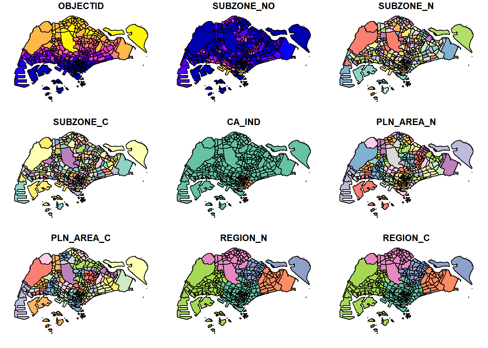
plot(st_geometry(mpsz))
plot(mpsz["PLN_AREA_N"])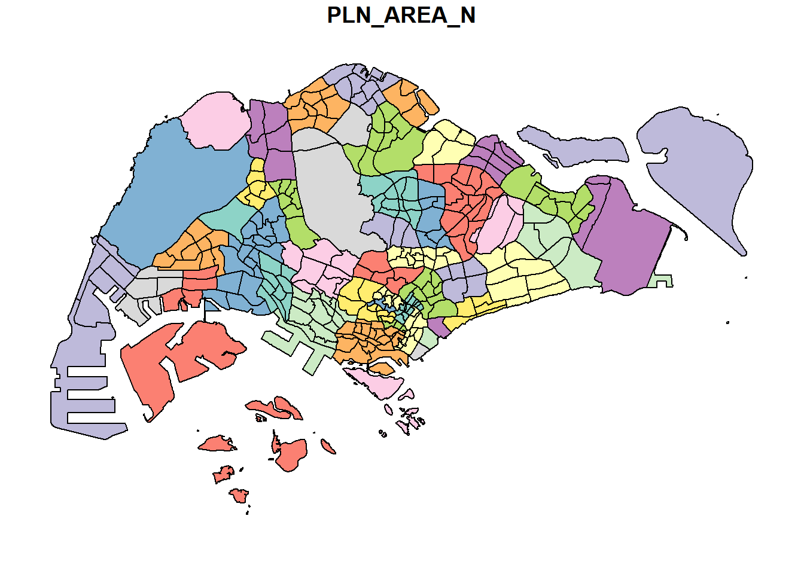
Working with Projection
st_crs(mpsz)Coordinate Reference System:
User input: SVY21
wkt:
PROJCRS["SVY21",
BASEGEOGCRS["SVY21[WGS84]",
DATUM["World Geodetic System 1984",
ELLIPSOID["WGS 84",6378137,298.257223563,
LENGTHUNIT["metre",1]],
ID["EPSG",6326]],
PRIMEM["Greenwich",0,
ANGLEUNIT["Degree",0.0174532925199433]]],
CONVERSION["unnamed",
METHOD["Transverse Mercator",
ID["EPSG",9807]],
PARAMETER["Latitude of natural origin",1.36666666666667,
ANGLEUNIT["Degree",0.0174532925199433],
ID["EPSG",8801]],
PARAMETER["Longitude of natural origin",103.833333333333,
ANGLEUNIT["Degree",0.0174532925199433],
ID["EPSG",8802]],
PARAMETER["Scale factor at natural origin",1,
SCALEUNIT["unity",1],
ID["EPSG",8805]],
PARAMETER["False easting",28001.642,
LENGTHUNIT["metre",1],
ID["EPSG",8806]],
PARAMETER["False northing",38744.572,
LENGTHUNIT["metre",1],
ID["EPSG",8807]]],
CS[Cartesian,2],
AXIS["(E)",east,
ORDER[1],
LENGTHUNIT["metre",1,
ID["EPSG",9001]]],
AXIS["(N)",north,
ORDER[2],
LENGTHUNIT["metre",1,
ID["EPSG",9001]]]]mpsz3414 <- st_set_crs(mpsz, 3414)
st_crs(mpsz3414)Coordinate Reference System:
User input: EPSG:3414
wkt:
PROJCRS["SVY21 / Singapore TM",
BASEGEOGCRS["SVY21",
DATUM["SVY21",
ELLIPSOID["WGS 84",6378137,298.257223563,
LENGTHUNIT["metre",1]]],
PRIMEM["Greenwich",0,
ANGLEUNIT["degree",0.0174532925199433]],
ID["EPSG",4757]],
CONVERSION["Singapore Transverse Mercator",
METHOD["Transverse Mercator",
ID["EPSG",9807]],
PARAMETER["Latitude of natural origin",1.36666666666667,
ANGLEUNIT["degree",0.0174532925199433],
ID["EPSG",8801]],
PARAMETER["Longitude of natural origin",103.833333333333,
ANGLEUNIT["degree",0.0174532925199433],
ID["EPSG",8802]],
PARAMETER["Scale factor at natural origin",1,
SCALEUNIT["unity",1],
ID["EPSG",8805]],
PARAMETER["False easting",28001.642,
LENGTHUNIT["metre",1],
ID["EPSG",8806]],
PARAMETER["False northing",38744.572,
LENGTHUNIT["metre",1],
ID["EPSG",8807]]],
CS[Cartesian,2],
AXIS["northing (N)",north,
ORDER[1],
LENGTHUNIT["metre",1]],
AXIS["easting (E)",east,
ORDER[2],
LENGTHUNIT["metre",1]],
USAGE[
SCOPE["Cadastre, engineering survey, topographic mapping."],
AREA["Singapore - onshore and offshore."],
BBOX[1.13,103.59,1.47,104.07]],
ID["EPSG",3414]]preschool3414 <- st_transform(preschool,
crs = 3414)Importing and Converting An Aspatial Data
listings <- read_csv("Data/aspatial/listings.csv")
list(listings) [[1]]
# A tibble: 3,483 × 75
id listing_url scrape_id last_scraped source name description
<dbl> <chr> <dbl> <date> <chr> <chr> <chr>
1 71609 https://www.airbnb.co… 2.02e13 2023-09-23 previ… Vill… For 3 room…
2 71896 https://www.airbnb.co… 2.02e13 2023-09-23 previ… Home… <b>The spa…
3 71903 https://www.airbnb.co… 2.02e13 2023-09-23 previ… Home… Like your …
4 275343 https://www.airbnb.co… 2.02e13 2023-09-23 city … Rent… **IMPORTAN…
5 275344 https://www.airbnb.co… 2.02e13 2023-09-23 city … Rent… Lovely hom…
6 289234 https://www.airbnb.co… 2.02e13 2023-09-23 previ… Home… This whole…
7 294281 https://www.airbnb.co… 2.02e13 2023-09-23 city … Rent… I have 3 b…
8 324945 https://www.airbnb.co… 2.02e13 2023-09-23 city … Rent… **IMPORTAN…
9 330095 https://www.airbnb.co… 2.02e13 2023-09-23 city … Rent… **IMPORTAN…
10 369141 https://www.airbnb.co… 2.02e13 2023-09-23 city … Plac… A room in …
# ℹ 3,473 more rows
# ℹ 68 more variables: neighborhood_overview <chr>, picture_url <chr>,
# host_id <dbl>, host_url <chr>, host_name <chr>, host_since <date>,
# host_location <chr>, host_about <chr>, host_response_time <chr>,
# host_response_rate <chr>, host_acceptance_rate <chr>,
# host_is_superhost <lgl>, host_thumbnail_url <chr>, host_picture_url <chr>,
# host_neighbourhood <chr>, host_listings_count <dbl>, …listings_sf <- st_as_sf(listings,
coords = c("longitude", "latitude"),
crs=4326) %>%
st_transform(crs = 3414)
glimpse(listings_sf)Rows: 3,483
Columns: 74
$ id <dbl> 71609, 71896, 71903, 2753…
$ listing_url <chr> "https://www.airbnb.com/r…
$ scrape_id <dbl> 2.023092e+13, 2.023092e+1…
$ last_scraped <date> 2023-09-23, 2023-09-23, …
$ source <chr> "previous scrape", "previ…
$ name <chr> "Villa in Singapore · ★4.…
$ description <chr> "For 3 rooms.Book room 1&…
$ neighborhood_overview <chr> NA, NA, "Quiet and view o…
$ picture_url <chr> "https://a0.muscache.com/…
$ host_id <dbl> 367042, 367042, 367042, 1…
$ host_url <chr> "https://www.airbnb.com/u…
$ host_name <chr> "Belinda", "Belinda", "Be…
$ host_since <date> 2011-01-29, 2011-01-29, …
$ host_location <chr> "Singapore", "Singapore",…
$ host_about <chr> "Hi My name is Belinda -H…
$ host_response_time <chr> "within a few hours", "wi…
$ host_response_rate <chr> "100%", "100%", "100%", "…
$ host_acceptance_rate <chr> "100%", "100%", "100%", "…
$ host_is_superhost <lgl> FALSE, FALSE, FALSE, FALS…
$ host_thumbnail_url <chr> "https://a0.muscache.com/…
$ host_picture_url <chr> "https://a0.muscache.com/…
$ host_neighbourhood <chr> "Tampines", "Tampines", "…
$ host_listings_count <dbl> 5, 5, 5, 52, 52, 5, 7, 52…
$ host_total_listings_count <dbl> 15, 15, 15, 65, 65, 15, 8…
$ host_verifications <chr> "['email', 'phone']", "['…
$ host_has_profile_pic <lgl> TRUE, TRUE, TRUE, TRUE, T…
$ host_identity_verified <lgl> TRUE, TRUE, TRUE, TRUE, T…
$ neighbourhood <chr> NA, NA, "Singapore, Singa…
$ neighbourhood_cleansed <chr> "Tampines", "Tampines", "…
$ neighbourhood_group_cleansed <chr> "East Region", "East Regi…
$ property_type <chr> "Private room in villa", …
$ room_type <chr> "Private room", "Private …
$ accommodates <dbl> 3, 1, 2, 1, 1, 4, 2, 1, 1…
$ bathrooms <lgl> NA, NA, NA, NA, NA, NA, N…
$ bathrooms_text <chr> "1 private bath", "Shared…
$ bedrooms <dbl> NA, NA, NA, NA, NA, 3, NA…
$ beds <dbl> 3, 1, 2, 1, 1, 5, 1, 1, 1…
$ amenities <chr> "[\"Private backyard \\u2…
$ price <chr> "$150.00", "$80.00", "$80…
$ minimum_nights <dbl> 92, 92, 92, 60, 60, 92, 9…
$ maximum_nights <dbl> 365, 365, 365, 999, 999, …
$ minimum_minimum_nights <dbl> 92, 92, 92, 60, 60, 92, 9…
$ maximum_minimum_nights <dbl> 92, 92, 92, 60, 60, 92, 9…
$ minimum_maximum_nights <dbl> 1125, 1125, 1125, 1125, 1…
$ maximum_maximum_nights <dbl> 1125, 1125, 1125, 1125, 1…
$ minimum_nights_avg_ntm <dbl> 92, 92, 92, 60, 60, 92, 9…
$ maximum_nights_avg_ntm <dbl> 1125, 1125, 1125, 1125, 1…
$ calendar_updated <lgl> NA, NA, NA, NA, NA, NA, N…
$ has_availability <lgl> TRUE, TRUE, TRUE, TRUE, T…
$ availability_30 <dbl> 28, 28, 28, 1, 30, 28, 30…
$ availability_60 <dbl> 58, 58, 58, 1, 60, 58, 60…
$ availability_90 <dbl> 88, 88, 88, 1, 90, 88, 90…
$ availability_365 <dbl> 89, 89, 89, 275, 274, 89,…
$ calendar_last_scraped <date> 2023-09-23, 2023-09-23, …
$ number_of_reviews <dbl> 20, 24, 47, 22, 17, 12, 1…
$ number_of_reviews_ltm <dbl> 0, 0, 0, 0, 3, 0, 0, 1, 3…
$ number_of_reviews_l30d <dbl> 0, 0, 0, 0, 0, 0, 0, 1, 1…
$ first_review <date> 2011-12-19, 2011-07-30, …
$ last_review <date> 2020-01-17, 2019-10-13, …
$ review_scores_rating <dbl> 4.44, 4.16, 4.41, 4.40, 4…
$ review_scores_accuracy <dbl> 4.37, 4.22, 4.39, 4.16, 4…
$ review_scores_cleanliness <dbl> 4.00, 4.09, 4.52, 4.26, 4…
$ review_scores_checkin <dbl> 4.63, 4.43, 4.63, 4.47, 4…
$ review_scores_communication <dbl> 4.78, 4.43, 4.64, 4.42, 4…
$ review_scores_location <dbl> 4.26, 4.17, 4.50, 4.53, 4…
$ review_scores_value <dbl> 4.32, 4.04, 4.36, 4.63, 4…
$ license <chr> NA, NA, NA, "S0399", "S03…
$ instant_bookable <lgl> FALSE, FALSE, FALSE, TRUE…
$ calculated_host_listings_count <dbl> 5, 5, 5, 52, 52, 5, 7, 52…
$ calculated_host_listings_count_entire_homes <dbl> 0, 0, 0, 1, 1, 0, 1, 1, 1…
$ calculated_host_listings_count_private_rooms <dbl> 5, 5, 5, 51, 51, 5, 6, 51…
$ calculated_host_listings_count_shared_rooms <dbl> 0, 0, 0, 0, 0, 0, 0, 0, 0…
$ reviews_per_month <dbl> 0.14, 0.16, 0.31, 0.17, 0…
$ geometry <POINT [m]> POINT (41972.5 3639…Geoprocessing with sf package
buffer_cycling <- st_buffer(cyclingpath,
dist=5, nQuadSegs = 30)
buffer_cycling$AREA <- st_area(buffer_cycling)
sum(buffer_cycling$AREA)1774367 [m^2]mpsz3414$`PreSch Count`<- lengths(st_intersects(mpsz3414, preschool3414))
summary(mpsz3414$`PreSch Count`) Min. 1st Qu. Median Mean 3rd Qu. Max.
0.00 0.00 4.00 7.09 10.00 72.00 top_n(mpsz3414, 1, `PreSch Count`)Simple feature collection with 1 feature and 16 fields
Geometry type: MULTIPOLYGON
Dimension: XY
Bounding box: xmin: 39655.33 ymin: 35966 xmax: 42940.57 ymax: 38622.37
Projected CRS: SVY21 / Singapore TM
OBJECTID SUBZONE_NO SUBZONE_N SUBZONE_C CA_IND PLN_AREA_N PLN_AREA_C
1 189 2 TAMPINES EAST TMSZ02 N TAMPINES TM
REGION_N REGION_C INC_CRC FMEL_UPD_D X_ADDR Y_ADDR SHAPE_Leng
1 EAST REGION ER 21658EAAF84F4D8D 2014-12-05 41122.55 37392.39 10180.62
SHAPE_Area geometry PreSch Count
1 4339824 MULTIPOLYGON (((42196.76 38... 72mpsz3414$Area <- mpsz3414 %>%
st_area()
mpsz3414 <- mpsz3414 %>%
mutate(`PreSch Density` = `PreSch Count`/Area * 1000000)Explorotary Data Analysis (EDA)
hist(mpsz3414$`PreSch Density`)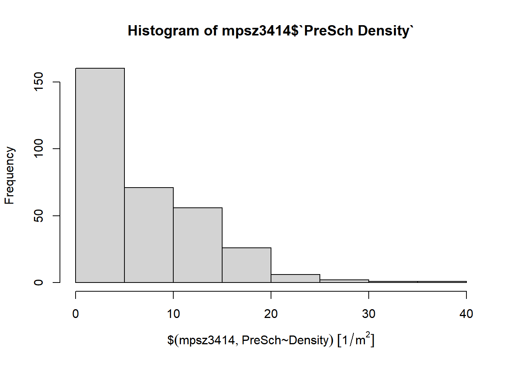
ggplot(data=mpsz3414,
aes(x= as.numeric(`PreSch Density`)))+
geom_histogram(bins=20,
color="black",
fill="light blue") +
labs(title = "Are pre-school even distributed in Singapore?",
subtitle= "There are many planning sub-zones with a single pre-school, on the other hand, \nthere are two planning sub-zones with at least 20 pre-schools",
x = "Pre-school density (per km sq)",
y = "Frequency")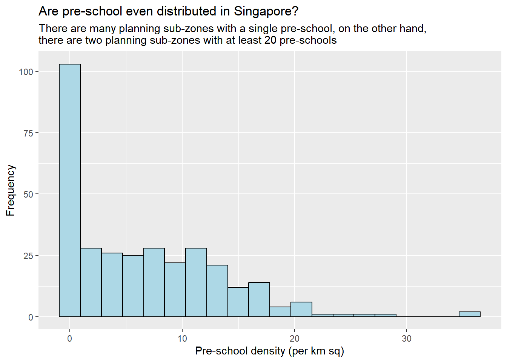
ggplot(data=mpsz3414,
aes(y = `PreSch Count`,
x= as.numeric(`PreSch Density`)))+
geom_point(color="black",
fill="light blue") +
xlim(0, 40) +
ylim(0, 40) +
labs(title = "",
x = "Pre-school density (per km sq)",
y = "Pre-school count")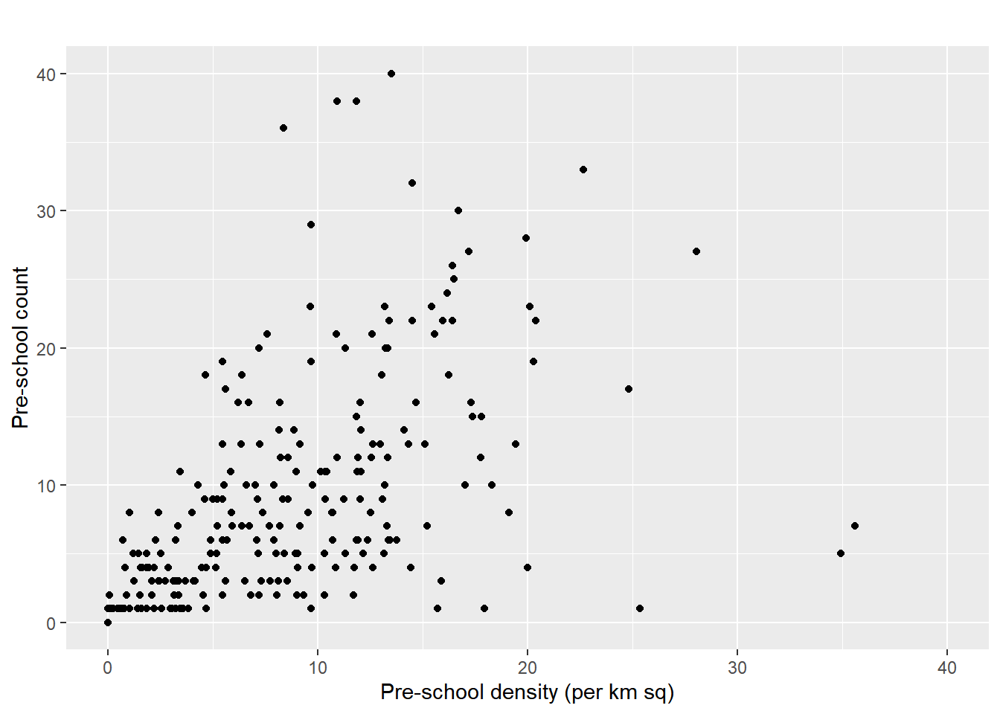
Importing the Population Data
popdata <- read_csv("Data/aspatial/respopagesextod2011to2020.csv")Data Preparation
Before a thematic map can be prepared, you are required to prepare a data table with year 2020 values. The data table should include the variables PA, SZ, YOUNG, ECONOMY ACTIVE, AGED, TOTAL, DEPENDENCY.
YOUNG: age group 0 to 4 until age groyup 20 to 24,
ECONOMY ACTIVE: age group 25-29 until age group 60-64,
AGED: age group 65 and above,
TOTAL: all age group, and
DEPENDENCY: the ratio between young and aged against economy active group
Data wrangling
popdata2020 <- popdata %>%
filter(Time == 2020) %>%
group_by(PA, SZ, AG) %>%
summarise(`POP` = sum(`Pop`)) %>%
ungroup()%>%
pivot_wider(names_from=AG,
values_from=POP) %>%
mutate(YOUNG = rowSums(.[3:6])
+rowSums(.[12])) %>%
mutate(`ECONOMY ACTIVE` = rowSums(.[7:11])+
rowSums(.[13:15]))%>%
mutate(`AGED`=rowSums(.[16:21])) %>%
mutate(`TOTAL`=rowSums(.[3:21])) %>%
mutate(`DEPENDENCY` = (`YOUNG` + `AGED`)
/`ECONOMY ACTIVE`) %>%
select(`PA`, `SZ`, `YOUNG`,
`ECONOMY ACTIVE`, `AGED`,
`TOTAL`, `DEPENDENCY`)Joining the attribute data and geospatial data
popdata2020 <- popdata2020 %>%
mutate_at(.vars = vars(PA, SZ),
.funs = list(toupper)) %>%
filter(`ECONOMY ACTIVE` > 0)
mpsz_pop2020 <- left_join(mpsz, popdata2020,
by = c("SUBZONE_N" = "SZ"))
write_rds(mpsz_pop2020, "Data/rds/mpszpop2020.rds")Choropleth Mapping Geospatial Data Using tmap
Plotting a choropleth map quickly by using qtm()
tmap_mode("plot")
qtm(mpsz_pop2020,
fill = "DEPENDENCY")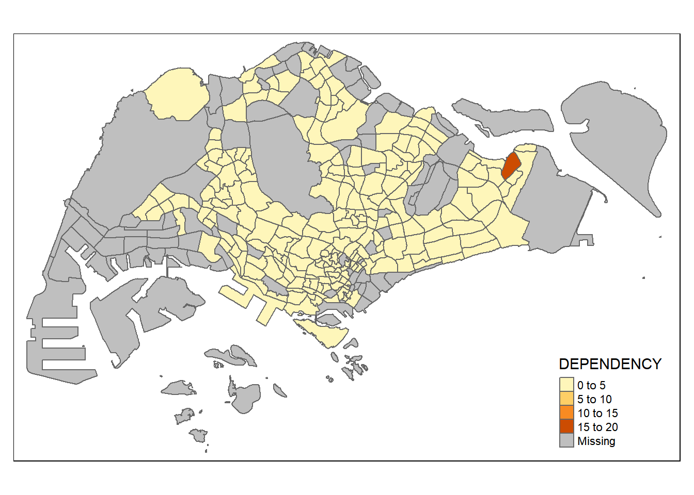
Creating a choropleth map by using tmap’s elements
tm_shape(mpsz_pop2020)+
tm_fill("DEPENDENCY",
style = "quantile",
palette = "Blues",
title = "Dependency ratio") +
tm_layout(main.title = "Distribution of Dependency Ratio by planning subzone",
main.title.position = "center",
main.title.size = 1.2,
legend.height = 0.45,
legend.width = 0.35,
frame = TRUE) +
tm_borders(alpha = 0.5) +
tm_compass(type="8star", size = 2) +
tm_scale_bar() +
tm_grid(alpha =0.2) +
tm_credits("Source: Planning Sub-zone boundary from Urban Redevelopment Authorithy (URA)\n and Population data from Department of Statistics DOS",
position = c("left", "bottom"))
Drawing a base map
tm_shape(mpsz_pop2020) +
tm_polygons()
Drawing a choropleth map using tm_polygons()
tm_shape(mpsz_pop2020)+
tm_polygons("DEPENDENCY")
Drawing a choropleth map using tm_fill() and *tm_border()**
tm_shape(mpsz_pop2020)+
tm_fill("DEPENDENCY")
tm_shape(mpsz_pop2020)+
tm_fill("DEPENDENCY") +
tm_borders(lwd = 0.1, alpha = 1)
Data classification methods of tmap
Plotting choropleth maps with built-in classification methods
tm_shape(mpsz_pop2020)+
tm_fill("DEPENDENCY",
n = 5,
style = "jenks") +
tm_borders(alpha = 0.5)
In the code chunk below, equal data classification method is used.
tm_shape(mpsz_pop2020)+
tm_fill("DEPENDENCY",
n = 5,
style = "equal") +
tm_borders(alpha = 0.5)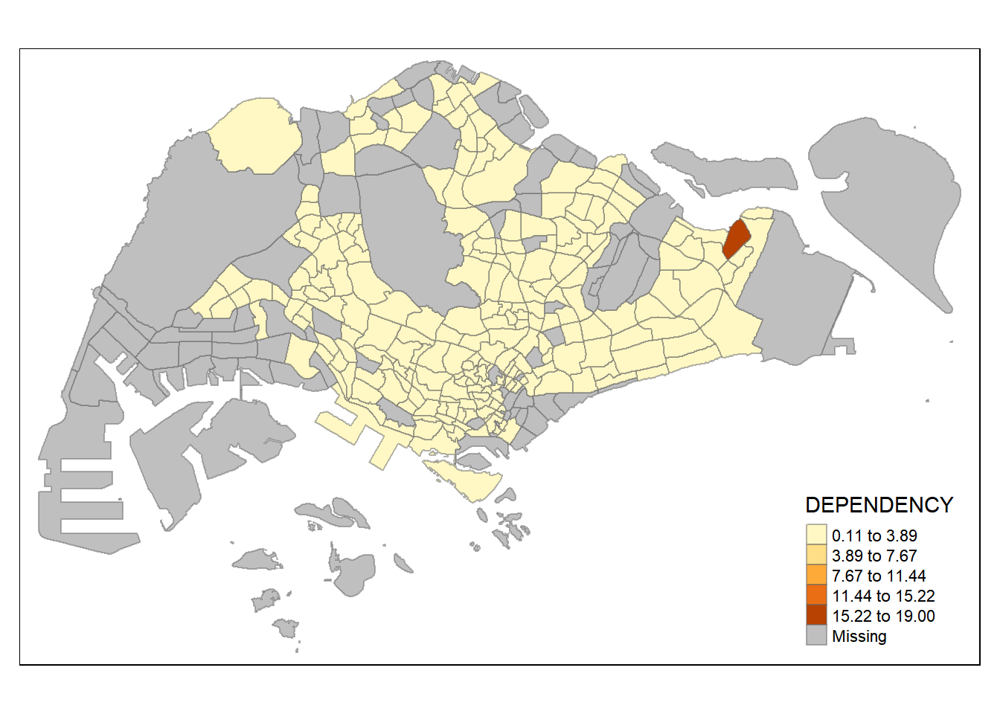
Plotting choropleth map with custome break
summary(mpsz_pop2020$DEPENDENCY) Min. 1st Qu. Median Mean 3rd Qu. Max. NA's
0.1111 0.7147 0.7866 0.8585 0.8763 19.0000 92 tm_shape(mpsz_pop2020)+
tm_fill("DEPENDENCY",
breaks = c(0, 0.60, 0.70, 0.80, 0.90, 1.00)) +
tm_borders(alpha = 0.5)
Colour Scheme
Using ColourBrewer palette
tm_shape(mpsz_pop2020)+
tm_fill("DEPENDENCY",
n = 6,
style = "quantile",
palette = "Blues") +
tm_borders(alpha = 0.5)
To reverse the colour shading, add a “-” prefix.
tm_shape(mpsz_pop2020)+
tm_fill("DEPENDENCY",
style = "quantile",
palette = "-Greens") +
tm_borders(alpha = 0.5)
Map Layouts
Map Legend
tm_shape(mpsz_pop2020)+
tm_fill("DEPENDENCY",
style = "jenks",
palette = "Blues",
legend.hist = TRUE,
legend.is.portrait = TRUE,
legend.hist.z = 0.1) +
tm_layout(main.title = "Distribution of Dependency Ratio by planning subzone \n(Jenks classification)",
main.title.position = "center",
main.title.size = 1,
legend.height = 0.45,
legend.width = 0.35,
legend.outside = FALSE,
legend.position = c("right", "bottom"),
frame = FALSE) +
tm_borders(alpha = 0.5)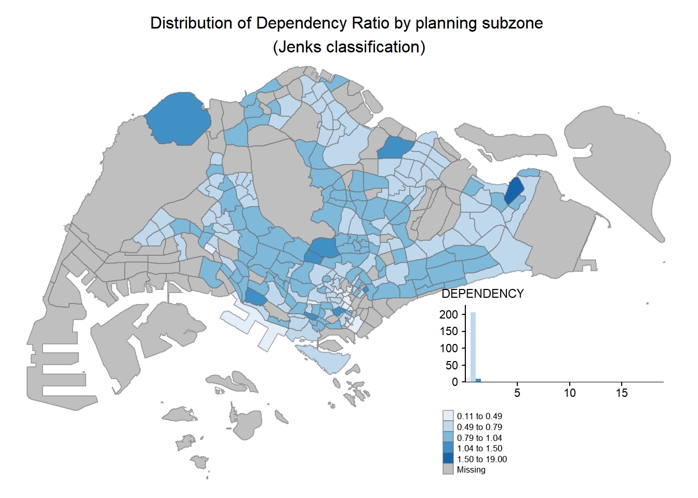
Map style
tm_shape(mpsz_pop2020)+
tm_fill("DEPENDENCY",
style = "quantile",
palette = "-Greens") +
tm_borders(alpha = 0.5) +
tmap_style("classic")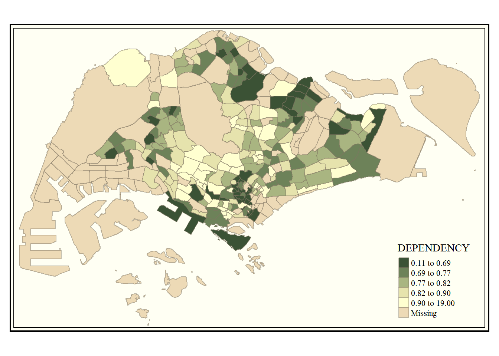
Cartographic Furniture
tm_shape(mpsz_pop2020)+
tm_fill("DEPENDENCY",
style = "quantile",
palette = "Blues",
title = "No. of persons") +
tm_layout(main.title = "Distribution of Dependency Ratio \nby planning subzone",
main.title.position = "center",
main.title.size = 1.2,
legend.height = 0.45,
legend.width = 0.35,
frame = TRUE) +
tm_borders(alpha = 0.5) +
tm_compass(type="8star", size = 2) +
tm_scale_bar(width = 0.15) +
tm_grid(lwd = 0.1, alpha = 0.2) +
tm_credits("Source: Planning Sub-zone boundary from Urban Redevelopment Authorithy (URA)\n and Population data from Department of Statistics DOS",
position = c("left", "bottom"))
Drawing Small Multiple Choropleth Maps
By assigning multiple values to at least one of the aesthetic arguments
tm_shape(mpsz_pop2020)+
tm_fill(c("YOUNG", "AGED"),
style = "equal",
palette = "Blues") +
tm_layout(legend.position = c("right", "bottom")) +
tm_borders(alpha = 0.5) +
tmap_style("white")
tm_shape(mpsz_pop2020)+
tm_polygons(c("DEPENDENCY","AGED"),
style = c("equal", "quantile"),
palette = list("Blues","Greens")) +
tm_layout(legend.position = c("right", "bottom"))
By defining a group-by variable in tm_facets()
tm_shape(mpsz_pop2020) +
tm_fill("DEPENDENCY",
style = "quantile",
palette = "Blues",
thres.poly = 0) +
tm_facets(by="REGION_N",
free.coords=TRUE,
drop.shapes=TRUE) +
tm_layout(legend.show = FALSE,
title.position = c("center", "center"),
title.size = 20) +
tm_borders(alpha = 0.5)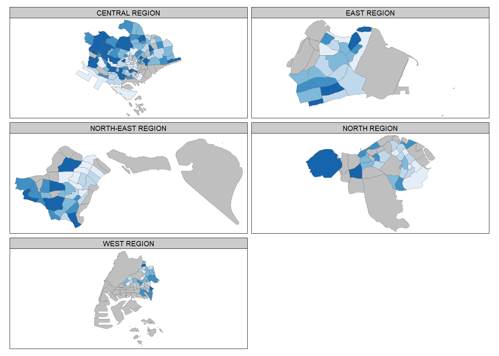
By creating multiple stand-alone maps with tmap_arrange()
youngmap <- tm_shape(mpsz_pop2020)+
tm_polygons("YOUNG",
style = "quantile",
palette = "Blues")
agedmap <- tm_shape(mpsz_pop2020)+
tm_polygons("AGED",
style = "quantile",
palette = "Blues")
tmap_arrange(youngmap, agedmap, asp=1, ncol=2)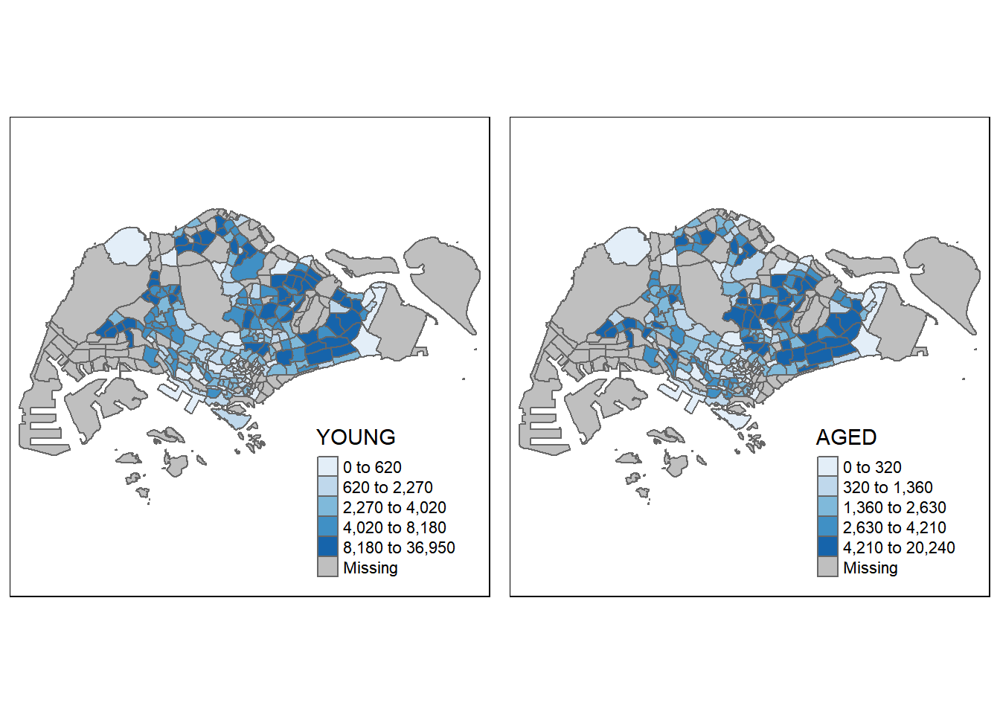
Mappping Spatial Object Meeting a Selection Criterion
tm_shape(mpsz_pop2020[mpsz_pop2020$REGION_N=="CENTRAL REGION", ])+
tm_fill("DEPENDENCY",
style = "quantile",
palette = "Blues",
legend.hist = TRUE,
legend.is.portrait = TRUE,
legend.hist.z = 0.1) +
tm_layout(legend.outside = TRUE,
legend.height = 0.45,
legend.width = 5.0,
legend.position = c("right", "bottom"),
frame = FALSE) +
tm_borders(alpha = 0.5)